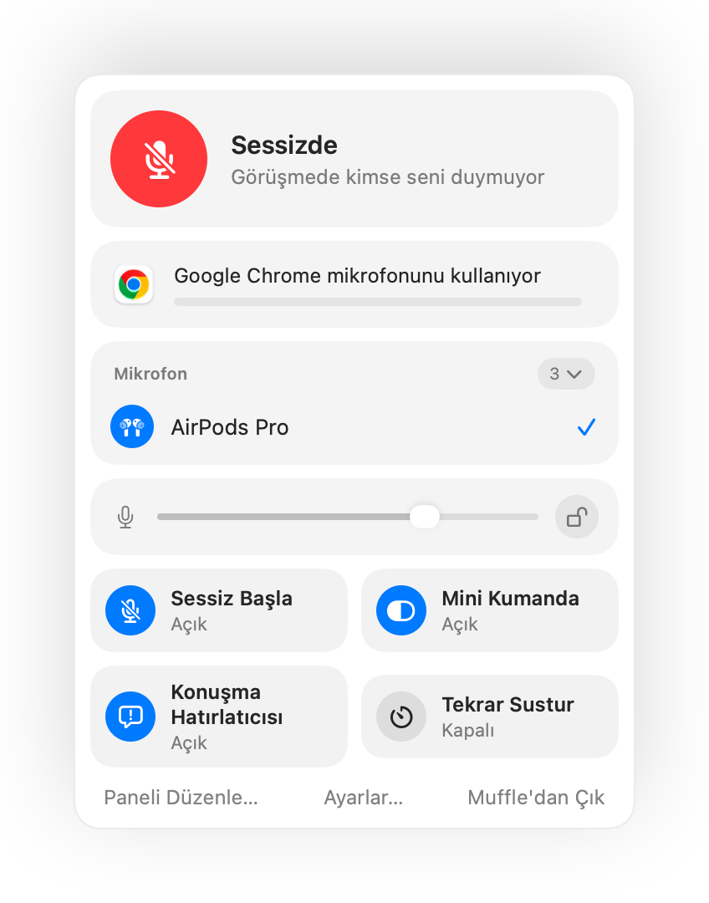

Mac için bas konuş: Her uygulamada geçerli
Bas konuş özelliği bir tuşa basılı tutana kadar seni sessizde tutar. Kalabalık bir toplantı veya gürültülü bir ortamda sessiz kalmanın en kolay yoludur. Ancak çok az uygulamada bulunur ve her biri farklı bir tuş kullanır.
Muffle, Mac'indeki her uygulamaya bas-konuş özelliği kazandırır. Ayarlar'da Bas-konuş seçeneğini belirle, konuşmak için kısayola basılı tut, susmak için bırak.
Muffle'ı 3 gün ücretsiz deneYakında Mac App Store'da
Bas konuş özelliğini kullan
- Muffle uygulamasını yükle.
- Muffle Ayarları'nda Kısayol modu ayarını “Bas-konuş” olarak ayarla.
- Konuşurken Control-Option-M kısayolunu basılı tut.
- Tuşu bırak. Yeniden sessizdesin.

- Tek bir tuş mu tercih edersin? Ayarlar'da bir konuşma tuşu belirle: Sağ ⌥, fn veya fazladan bir fare düğmesi.
- Muffle Ayarları'nda rahat kullanabileceğin bir kısayol seç, örneğin bir F tuşu.
Sorular
Bas konuş Google Meet üzerinde çalışır mı?
Evet. Muffle doğrudan mikrofonu susturur, bu yüzden bas konuş Google Meet, Zoom, Teams, Discord ve diğer her uygulamada çalışır.
Bas-sustur özelliği var mı?
Evet. “Bas-sustur” seçeneğini belirleyip kısayolu basılı tutarak, öksürük düğmesi gibi bir anlığına mikrofonunu susturabilirsin.